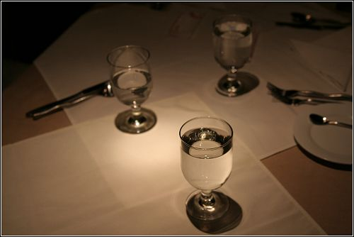
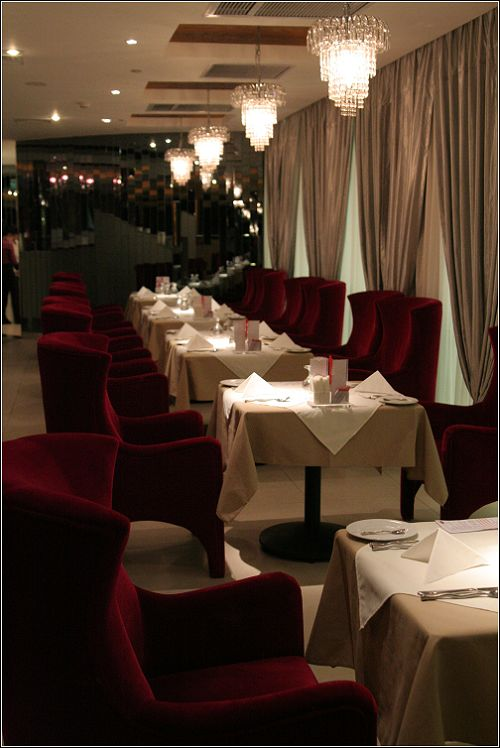
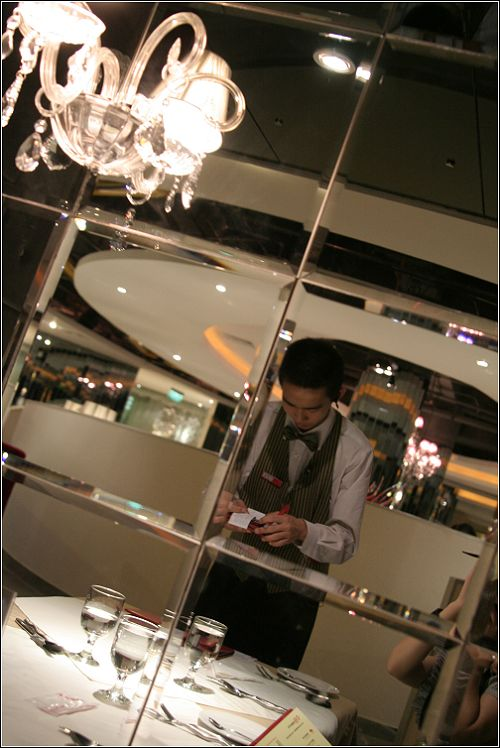
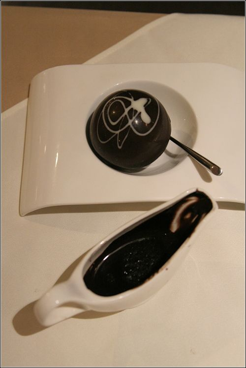
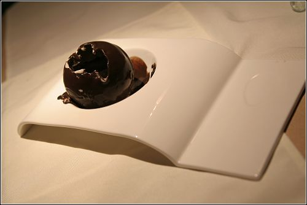

象美食一样满足。 @ Jun 03, 2009
下午三点多就饿了，终于盼来晚上的大餐。
比起过去现在的我更热衷于美食。

德国猪手让人失望，油腻炸得不彻底，隐约品出猪脚上的腥味。见另两人点的牛排很好吃的样子....我的胃都在遗憾。还有甜品可以期盼，不是吗？


带果冻的甜品。

上座率不高，但很安静，不用扯着嗓门说话了。

服务非常好，准确地为各个客人上菜，不问一句话。

蓬头垢面的今天。

名为“毁灭地球”的甜品，里面冰淇淋，外面球状巧克力。
将器皿里盛着的热巧克力浇灌在球体上食用。

地球原来是这样毁灭的....
名字很酷却没有我喜欢的巧克力慕丝好吃。

14 Responses to “象美食一样满足。”
2009-06-03
是在台塑？ 很喜欢倒数第三张。知性的，也是优雅的，茶的优雅是由内而外的，很有质感：）
2009-06-03
这衣服从正面看，还是很不错的。
2009-06-03
在王品台塑吧 去一次还可以 去多了就会觉得那西餐做的也不咋地 所以也别羡慕别人的牛排拉 ^!*
2009-06-03
总是很女人味。
难以抗拒的美食，难以减下的肥肉。哈哈。太矛盾了。我现在不敢胡吃海喝的。肥~
2009-06-03
看上去很好吃的样子，任何美食对于我来说都是很致命的，很羡慕你怎么吃都不胖。食物拍得很有气质，器皿也很漂亮，衣服很好看，但拍得太少了
2009-06-03
却是很喜欢你今天的衣服呐，有超有女人味～
2009-06-03
最近爆发了一次空前绝后的皮肤过敏症，怀疑是小龙虾惹的祸。
2009-06-03
这衣服很漂亮, 有点像“千层雪“
食物够精致
2009-06-03
服装很应景，就是拍得少了点.
2009-06-03
蝶家吗？
每份东西看上去都好小小的一份
2009-06-03
是王品旗下的西堤牛排，在金鹰天地六楼。
2009-06-03
喜欢今天的衣服，怎么不拍个全身照啊？
2009-06-04
看到你的留言了，真有意思。我们在梦里有交情。而且我不歧视已婚人士的啦。
2009-06-10
是西堤,想去但一直没机会.
Leave A Reply
存档只读，评论已关闭。